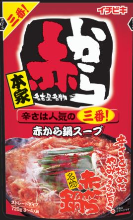
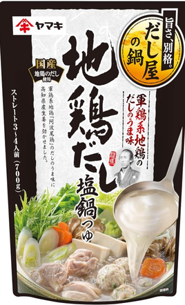
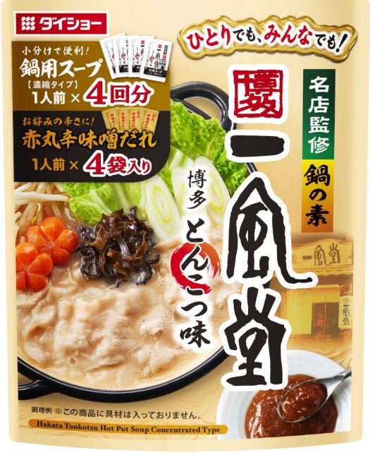
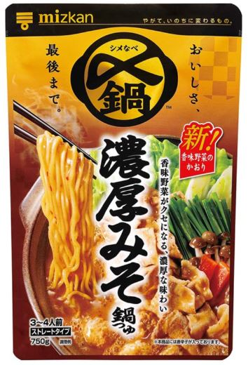
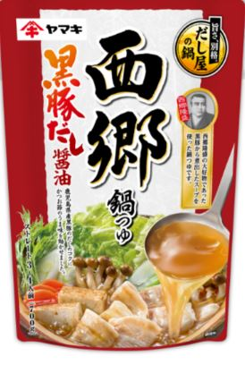

YummyDiary「日々の鍋日記」
- 25/5/7
- 25/5/8
- 25/5/9
- 25/5/11
- 25/5/12
- 25/5/14
- 52/5/16
- 25/5/17
- 25/5/18
- 25/5/21
- 25/5/22
- 25/6/5
- 25/6/6
- 25/6/12
- 25/6/16
- 25/6/17
- 25/6/17
- 25/6/18
- 25/6/20
- 25/6/20
- 25/6/23
- 25/6/24
- 25/6/24
- 25/7/1
- 25/7/3
- 25/7/4
- 25/7/7
- 25/7/8
- 25/7/8
- 25/7/9
- 25/7/9
- 25/7/16
- 25/7/21
- 25/8/3
- 25/8/5
- 25/8/9
- 25/8/12
- 25/8/13
- 25/8/15
- 25/8/16
- 25/8/19
- 25/8/28
- 25/8/30
- 25/8/31
- 25/9/1
- 25/9/3
- 25/9/4
- 25/9/5
- 25/9/5
- 25/9/6
- 25/9/10
- 25/9/11
- 25/9/12
- 25/9/14
- 25/9/19
- 25/9/28
- 25/10/1
- 25/10/7
- 25/10/8
- 25/10/8
- 25/10/9
- 25/10/10
- 25/10/10
- 25/10/14
- 25/10/22
- 25/10/23
- 25/10/24
- 25/10/28
- 25/10/30
- 25/11/4
- ごま豆乳鍋つゆ（ミツカン）
- ごま豆乳鍋つゆ（ミツカン）
- 赤から（イチビキ）

- 赤から（イチビキ）
- 赤から（イチビキ）
- スンドゥブチゲ（S＆B）
- キムチ鍋の素（エバラ：300ml）
- キムチ鍋の素（エバラ）
- キムチ鍋の素（エバラ）
- キムチ鍋の素（エバラ）
- キムチ鍋の素（エバラ）
- スンドゥブチゲの素（丸大食品）
- スンドゥブチゲの素（丸大食品）
- ミツカンlovers辛旨じゃん
- ミツカンlovers辛旨じゃん
- ミツカンlovers辛旨じゃん
- ミツカンlovers辛旨じゃん
- ミツカンlovers辛旨じゃん
- ミツカンlovers辛旨じゃん
- 鳥だしうましお7個入（味の素）
- 豚骨醬油（ミツカン）
- 豚骨醬油（ミツカン）
- 豚骨醬油（ミツカン）
- 豚みそ（イチビキ）
- 豚みそ（イチビキ）
- 豚骨醬油（ミツカン）
- 赤から（イチビキ）
- 赤から（イチビキ）
- 岐阜タンメン監修塩タンメン鍋つゆ（寿がきや）
- 岐阜タンメン監修塩タンメン鍋つゆ（寿がきや）
- 地鶏だし塩鍋つゆ（ヤマキ）

- プチッと鍋 担々ごま鍋 40ｇ×4個（エバラ）
- 焼あごだし鍋つゆ（ミツカン）
- SUGAKIYA和風とんこつ鍋つゆ（寿がきや）
- SUGAKIYA和風とんこつ鍋つゆ（寿がきや）
- 参鶏湯の素（S＆B）
- キムチ鍋つゆ（イチビキ）
- キムチ鍋つゆ（イチビキ）
- 寄せ鍋つゆ(イチビキ）
- 寄せ鍋つゆ(イチビキ）
- ごま豆乳鍋つゆ(ミツカン）
- ごま豆乳鍋つゆ(ミツカン）
- ごま豆乳鍋つゆ(ミツカン）
- ごま豆乳鍋つゆ(ミツカン）
- ごま豆乳鍋つゆ(ミツカン）
- 赤から(ミツカン）
（小分け4パック入り）
- 赤から(ミツカン）
（小分け4パック入り）
- ちゃんぽん（五木食品）
- 赤から(ミツカン）
（小分け4パック入り）
- 赤から(ミツカン）
（小分け4パック入り）
- 長崎ちゃんぽん（狩野ジャパン）
- キムチ鍋つゆ（ミツカン_小分け4パック）
- キムチ鍋つゆ（ミツカン_小分け4パック）
- キムチ鍋つゆ（ミツカン_小分け4パック）
- キムチ鍋つゆ（ミツカン_小分け4パック）
- 一風堂（ゼンショー）

- 一風堂（ゼンショー）
- 一風堂（ゼンショー）
- ちゃんぽん（五木食品）
- 一風堂（ゼンショー）
- 焼あごだし鍋つゆ（ミツカン_小分け4パック）
- 焼あごだし鍋つゆ（ミツカン_小分け4パック）
- ちゃんぽん（五木食品）
- 焼あごだし鍋つゆ（ミツカン_小分け4パック）
- 焼あごだし鍋つゆ（ミツカン_小分け4パック）
- 濃厚みそ（ミツカン）

- 濃厚みそ（ミツカン）
- 西郷鍋つゆ 黒豚だし醤油（ヤマキ）

- 西郷鍋つゆ 黒豚だし醤油（ヤマキ）
- とんこつ醬油鍋つゆ（ニッド）
-
ねぎ×きゃべつ×豆腐
→★★★★（4.0）
-
ねぎ×きゃべつ×豆腐
→★★★★（4.0）
-
ねぎ×きゃべつ×豆腐
→★★★★⋆（4.5）
-
右記の残り（ねぎ・きゃべつ・豆腐）×やきそば
→★★★★（4.0）
-
超残り（ほぼ右記入ってない_ねぎ・きゃべつ・豆腐）
→★★★⋆（3.5）
-
ねぎ××豆腐
→★★★⋆（3.5）
生卵 投入
→★★★⋆（3.5）
-
ねぎ×きゃべつ×豆腐
→★★★⋆（3.5）
-
夕方：ねぎ×きゃべつ×豆腐
→★★★⋆（3.5）
夜：豆腐×やきそば
→★★★（3.0）
-
ねぎ×きゃべつ
→★★★⋆（3.5）
-
豆腐のみ
→★★★⋆（3.5）
-
豆腐×やきそば
→★★★⋆（3.5）
-
豆腐
→★★★⋆（3.5）
-
豆腐×焼きそば
→★★★⋆（3.5）
-
豆腐×焼きそば
→★★★⋆（3.5）
-
ねぎ×焼きそば
→★★★★（4.0）汁なくすまで油そばとして
-
ねぎ×焼きそば
→★★★⋆（3.5）ラーメンとして
-
豆腐×焼きそば
→★★★⋆（3.5）ラーメンとして
-
ねぎ×焼きそば
→★★★★（4.0）汁なくすまで油そばとして
-
ねぎ×豆腐
→★★★⋆（3.5）鍋として
-
ねぎ×豆腐
→★（1.0)
-
ねぎ×やきそば
→★★★★（4.0)
-
豆腐
→★★★（3.0)
-
ねぎ×れたす
→★★★⋆（3.5)
-
ねぎ×やきそば
→★★★（3.0)
-
ねぎ×しめじ
→★★★⋆（3.5)
-
ねぎ×きゃべつ×豆腐×しめじ
→★★★⋆(3.5)
やきそば 投入
→★★★（3.0）
-
ねぎ×白菜×豆腐
→★★★★（4.0)
-
（ねぎ×白菜×豆腐）×うどん入れる
→★★★★⋆（4.5)
-
ねぎ×白菜×豆腐
→★★★⋆（3.5)
×うどん
→★★★⋆（3.5）
-
ねぎ×白菜×豆腐
→★★★⋆（3.5)
×うどん
→★★★⋆（3.5）
-
白菜×豆腐
→★★★⋆（3.5)
焼きそば 投入
→★★★⋆（3.5)
-
ねぎ×うどん
→★★（2.0)
-
ねぎ×キャベツ×豆腐×しめじ
→★★（3.5)
うどん投入
→→★★★（3.0)
-
昼：ねぎ×キャベツ×豆腐
→★★★⋆（3.5)
夕方：やきそば投入（ラーメンになる）
→★★★⋆（3.5)
-
ねぎ×キャベツ×豆腐
→★（1.0)
-
ネギ×豆腐
→★★★⋆（3.5）
ご飯投入してクッパ
→★★★⋆（3.5）
-
豆腐×しめじ
→★★★（3.0）
ご飯投入してクッパ
→★★★（3.0）
-
ねぎ×しめじ
→★★（2.0）
-
豆腐×ねぎ×しめじ
→★★★⋆（3.5）※4.0かも審査中
雑炊
→★★★⋆（3.5）※4.0かも審査中
-
(豆腐×ねぎ×しめじの残りのスープ)×うどんいれる
→★★★⋆（3.5）
-
豆腐×ねぎ×やきそば
→★★★⋆（3.5）
-
豆腐のみ
→★★★⋆（4.0）
雑炊
→★★★⋆（3.5）
-
豆腐のみ
→★★★⋆（3.5）
-
豆腐のみ
→★★★⋆（3.5）
-
豆腐×ねぎ
→★★★★（4.0）
雑炊（豆腐×ねぎ）
→★★★★（4.0）
-
豆腐×ねぎ（5辛）
→★★★★⋆（4.5）
ご飯投入してクッパ（5辛）
→★★★★⋆（4.5）
-
豆腐×ねぎ×焼きそば（5辛）
→★★★★（4.0）
ねぎ×しめじ×うどん（5辛）
→★★★★（4.0）
-
シーフード×油_小鍋（太海商事_徳用シーフードミックス）※フライパンではなく小鍋に油引いてシーフード入れる。熟す蒸す感じ。
→★★★★（4.0）
-
豆腐×ねぎ（5辛）
→★★★★（4.0）
-
（豆腐×ねぎ（5辛）のかなり少ない残り）×焼きそば
→★★★⋆（3.5）
-
シーフード×油_小鍋（太海商事_徳用シーフードミックス）
→★★★⋆（3.5）
-
豆腐×焼きそば
→★★★（3.0）
-
豆腐
→★★★（3.0）
雑炊
→★★★（3.0）
-
豆腐
→★★★（3.0）
おじや
→★★★（3.0）
-
豆腐
→★★★⋆（3.5）
-
豆腐×ねぎ
→★★★⋆（3.5）（辛味ありとなし）
※辛味なし3.5。辛味あり3.5（辛味なしよりありのが3.5の中で美味い）
-
豆腐×ねぎ
→★★★⋆（3.5）（辛味ありとなし）
※辛味なし3.5。辛味あり3.5（辛味なしよりありのが3.5の中で美味い）
-
豆腐×ねぎ
→★★★⋆（3.5）（辛味ありのみ）
※辛味いれて最初から最後まで全部食べた。
-
シーフード×油_小鍋（太海商事_徳用シーフードミックス）※フライパンではなく小鍋に油引いてシーフード入れる。熟す蒸す感じ。
→★★★★（4.0）
-
やきそば×豆腐×ねぎ
→★★★⋆（3.5）（辛味あり）
→★★★（3.0）（辛味なし）
-
豆腐×ねぎ
→★★★⋆（3.5）
-
豆腐×やきそば
→★★★⋆（3.5）
-
シーフード×油_小鍋（太海商事_徳用シーフードミックス）※フライパンではなく小鍋に油引いてシーフード入れる。熟す蒸す感じ。
→★★★★（4.0）
-
豆腐のみ
→★★★★（4.0）
-
豆腐のみ
→★★★⋆（3.5）
-
中華麵（名城の中華楼）
→★★★★（4.0）
クッパ（ご飯いれた）
→★★★★（4.0）
-
中華麵（名城の中華楼）
→★★★★（4.0）
-
豆腐×しめじ
→★★★⋆（3.5）
-
豆腐×しめじ
→★★★（3.0）
-
ねぎ×しめじ
→★★（2.0）
- うまい。ホッとする味。
- 豆腐を追加で入れてうまかった。
ホッとする味。このジャンルでは一番かもな。
- 赤からまじでうまい。
- やきそばいれるとラーメンになる。うまいね。
- 野菜の残りかすのスープとして食べた。
- 生卵いれないほうがうまい。入れると辛さがまろやかになる。豆腐とねぎでシンプルにしてたべた。普通にうまい。
- 素を100mlつかったはずなのに50mlだったかも。キムチ鍋を5/16-5/22まで食べたけど、使った素の計算があわなくなった笑 水を1:2でいれるから、素は300mlなんだけど、実質900ml（素300＋水600）食べられる。
- 夕方と夜で2回たべた。夜はやきそばいれた。夜は人と電話してたから味がよくわからなくなったかも。やはり食に集中しないとだめ。
- きゃべつとねぎをいれた。スープとして食べた。ご飯炊なくて死んだ。やはり鍋×ごはんでたべるべき。当たり前なんだけど。ご飯なくておわた...
- 豆腐だけ入れてたべた。普通にうまかった。豆腐だけならまな板も包丁もいらない。楽。豆腐はハシで分解する。
- 豆腐と焼きそばいれてラーメンにした。30円のやきそばがラーメンになる。普通にうまかった。豆腐もまな板も包丁も使わずハシで分解した。クソ楽。
- ふつうにうまい。No1のかんじはあまりしない。
- なかなかうまかった。エバラ（キムチ鍋）の焼きそばよりうまいな。
- なかなかうまい。
- うめぇなぁ マジ美味いな 油そばやん。店のうまいやつやん。
ねぎ×やきそばでええんやな。ねぎだけでくそうまい。やきそばと。久々にくそうまい。4.0やな。またくいてぇもんな。てかめんもいいわ。まじで。くそ大事なポイントは汁までなくすようにあっためること。
- なかなかうまい。ラーメンてかんじ。汁とばさないとラーメンやな
- なかなかうまい。
- 4.0 わかった！！！ エウレカ！！ 最後まで汁なくなるまでやると、くそうまい4.0になる。汁あるとラーメンになり、3.5やな
- 鍋としてくった。ふつうにうまい。
- 深夜に食う。匂いくそ。くそみたいな匂いにひきずられる。最悪。1.0。まずい。
雑炊を人生初つくる。最初3.5うまくね？そこから徐々に2.0になる。もう食べたくない。これはひどい。匂いてくそ大事なんやな。まずい。
- くそうまかった4.0 まじ神てメモにかいてた （しくじり：ペットボトル新品に500いれる→次の日、ミスにきづく。味がまずくなる。なんかおかしくい？よな）
- 3.0。昨日よりまずいきがする。なんか味がおかしい？ペットボトルにいれて、熱い部屋でおいてたからか、まずい。なんかおかしい。
- なんか味がやはり落ちてる。ちゃんと沸騰させたけど。うーん。。なんか違和感。
- なんかおもかった
- なべ3.5 雑炊した。雑炊はたまごいれて3.5。今度雑炊食べたら4.0あるかもな
- なべは3.5。やきそばいれると、なんかおめぇな3.0。おもい。一番最初に焼きそば入れて食べた時は4.0だったが、なぜだろう。
- うまい。流石。
- 4.5。うまいな！！！。うどんいれてくうとうまい！！！！くそうめぇわ。
- うまい。3.5。4.0でもいいかもしれないうまさ。野菜がうまい！たしかにパッケージどおり野菜がうまい
- 豆腐追加で入れた。うまい。とうふうまいな。やはり4.0でもいいかもな
- ふつうにうまい。3.5。豆腐・白菜まではうまかった。あと、焼きそば入れて、らーめんまでは。そこから、鶏肉のくさったやついれて、ごみまずかった。古い鶏肉NG。
あと、白菜は芯はいるとごみまずい。勉強になった。
- うまくねぇ。匂いも変。キューブじたいがまずい説あるな
- 普通にうまい。うどんいれるとあじおかしくなるからいれないほうがいい。お茶づけとして次回食べたい。パッケージ裏面でオススメて感じで書いてる。うどんはおよびじゃなさそうだな。
- 鍋として普通にうまい。いいかんじ。やきそばいれた、ラーメンとしては4.0いくかも！てくらいうまい。次また食べてみたいレベル。今は一旦3.5。次に確かめたいね。4.0かどうかは。
- 8/3につくったものを8/5たべたら、味へんになってた（冷やしたり放置したりしてたから。oh my god 勉強になったわ。）
- スゲー不思議な商品。最初は何口食べでも3.0やなと思うが、鍋の素にねぎ・豆腐入れて、全部たべると、あれ？ なんだこれ3.5やな。あれ？また買ってもいいかもしれないと思う不思議な商品。普通なんか鍋の素て嫌な感じがする時があるんだけど、それが全くない。すごい。これはまじですごいこと。1食で全部たべてしまった。豆腐とねぎ
でくうていうのが天才かもな。なんか全部食べれちゃう。こういう商品てまじでないぞ。なんかお前の味覚は大丈夫か？いつも濃い味食ってるけど、俺の味、うまいと思えるかという？挑戦を投げかけられているような気もする。なんか多分またかうかもな。食べても嫌にならない。とんでもなく、そこ凄い。と思える商品だったな。おもしれー。あと風邪のとき食うのめちゃよいかも。あと毎日食べてもなんか嫌にならない感じ。そして、これ食ってたらなんか自然と元気になる感じやな。全部たべてしまったな。1食で全部食うてあんまないよなー。
- 普通やな。
- うまくねぇな（320mlを冷蔵庫で冷やしていて、それによる影響はあると思うが。そもそも冷やしてはいけねぇけど、それにしてもおいしくねぇ。）
- うめぇな。鍋も雑炊も4.0ありえるうまさ。4.0に近いの間違いない。4.0（過去の自分にオススメできる。また食べたい）かは精査中。多分またかう。普通にうまい（3.5）とまた食べたい（4.0）の差は半端ないけど、これはその壁を超えてるかも。一旦3.5。
- 普通にうどんもうまいな。
- 普通にうまいが、なんかパックより小分けのほうがあんまかな。やきそばの麺があわなかった説もある。
- 豆腐のみだとうまい。4.0。また食べたい。豆腐はまな板で切らず、はしできると調理楽。天才的発想。雑炊もうまい。3.5だけど、また食いたいレベルのうまさ（なんかまた雑炊くいたいんだよね）
でもいったん3.5。ちょっとスープ少なくしすぎて卵入れてごはんいれたな。もうちょいスープ残さんとだめやな。スープのみすぎた笑
- 人に話しかけられながら食べたため、あんまり味が分からんかった。けど普通にうまい。
- 普通にうまい。25/8/30の1パック分の鍋の残りをたべる。
- うめぇ！！！な。幸せな感じがする。豆腐とねぎでしっかりうまい。4.0やわ。また食べたい。豆腐とねぎ入りの雑炊もまじうめぇ4.0！！（ちゃんとたまご研いで、ごはん入れて。菜箸で回転させながら、鍋あっためるとよい！！よりうまいし、焦げずにあらいものらく。）鍋も雑炊も、まじで過去の自分にオススメできる。これは確実にまたかうね。豆腐ねぎはヒット！！！
- マジでくそ美味い！！天才だわ
過去の自分に超オススメできる。小分けなのもよい。使いやすいな。超シンプルにねぎ・豆腐が最高。うめぇわ！！バケモン
- うめぇな！！25/9/3の残りの鍋（豆腐とねぎの残り）に豆腐追加して、やきそばいれた。うまいわ。うどんも食ったけどうまいね。
- これが最強の作り方。フライパン洗うめんどいから使わんくて良い。小さい鍋つかえ。小さい鍋に油いれる（そこそこの量。少なすぎるとだめ。ちょっと多めくらい）。次にシーフードぶち込む。そんでかならず蓋して、熟す蒸す感じ。そのあと水300入れてｍ沸騰させて、粉入れて沸騰させて、麺入れて2分でくう。
ちゃんぽん×俺様の食材×俺様の作りか=4.0だわ。油の量と蒸すのが大事やな。油めちゃ少なくしたとき、最強の作り方よりはだめやったね。まじうめぇ！！戦争なくなる味するぞ！！！。スープがうまいな。五木食品に注目するわ。
- うまい。今日は4.0
- 衣笠製麵のめんがまじでうまいな！！うまさがのこる。25/9/5につくった鍋のごくわずかなスープの残りをつかったから、スープはすくなすぎたけど、うまい。でも3.5かな。麵が食べた後、うまさが口にのこったけど、スープすくな過ぎて、これは精査。一旦3.5。4.0つけてもいいかもだけど。
- 普通にうまい。
- 3.0
- 3.0。後味よくないな
- 3.0。後味よくない
- 3.5。普通にうまい。
- 3.5。普通にうまい。
- 3.5。普通にうまい。
- 3.5。普通にうまい。※次食べたら4.0もあるかもしれないが、ミツカンの素が300円だとすると、このゼンショーの鍋の素は400円で約100円高いのがネック。
- うめぇなぁ。幸せな味する。ほんとに作るの楽。①小鍋に油引く。②冷凍シーフード入れる。③蓋して鍋で熱する④水300ml入れる。粉入れる。⑤沸騰したら麺入れて1分半で完成。マジ美味い。4.0。また食べたい！
- 辛味3.5。ノーマル3.0。
- 3.5
- 3.5。でも4.0でもいいかも。
- 4.0。でもイカはうまくないな。太海商事イカ。イカ入れない方がよさそう。でも4.0
- 4.0。
- 普通にうまい。
- うまい！久々に4.0やな。うまいわ。北海道の味噌ラーメンとおなじやんけ。スゲーなおい。
- 4.0やな。開封してから時間たっているから、風味とか味とか落ちてる気がするけど、でも4.0。これうまいわ！
- 普通にうまい。
- 普通。時間たちすぎた（10/28につくって、残りを10/30にたべた。冷蔵庫で冷やしたけど、まぁよくないわな。）
- 美味しくない。人工的な味。
- 1回目
- 2回目（豆乳の素：1回分完了）
- 1回目
- 2回目
- 3回目（赤からの素：1回分完了）
- 1回目（スンドゥブチゲの素：1回分完了）
- 1回目_100ml使ったはずだけど、計算合わなくて、50mlだったかも。おかしい。妖怪のしわざだ。150ml使おうと思ってら100mlにしたはずなのに。ぺろり。変だな。
- 2回目_素50ml×2=100ml使用
- 3回目_素50ml使用
- 4回目_素50ml使用l
- 5回目_素50ml使用（キムチ鍋の素300ml：1回分完了）
- 1回目
- 2回目
- 1回目_素50ml水100ml
- 2回目_素50ml水100ml
- 3回目_素50ml水100ml
- 4回目_素50ml水100ml
- 5回目_素50ml水100ml
- 6回目_素140ml水280ml（素全部なくなった。）
- 1回目_キューブ2個分（水360ml）→あまりにもまずくて終了
- 1回目_素250ml
- 2回目_素150ml
- 2回目_素350ml（素全部なくなった）
- 1回目_素250ml
- 2回目_素460ml（素全部なくなった）
- 1回目_素全部つかう
- 1回目_素全部つかう
- 2回目
- 1回目_素全部つかう
- 2回目
- 1回目_素全部つかう
- 1回目_1個（水150ml）つかう_うまくないから今後たべない
- 1回目_素全部つかう
- 1回目
- 2回目_8/3の残り少なった鍋が時間たって味おかしくなって捨てた。。_1袋全部終わり（うーん。。もったいねぇ）
- 1回目（素全部つかう）
- 1回目（素400mlつかう）
- 2回目（素320mlつかう_キムチ鍋の素（720ml）:全部使い終わる。1回分完了）
- 1回目
- 2回目（素全部使いおわる。）
- 1回目_小分け1パックつかう
- 2回目_小分け1パックつかう
- 3回目_小分け1パックつかう
- 4回目_25/8/30の残り分をたべる。
- 5回目_小分け1パックつかう（4パック全部全部つかいおわった。）
- 1回目_小分け2パックつかっているなう
- 2回目_小分け2パック分つかい終わった（残り2パック）。さらに小分け1パック分使う（残り1パック）
- （※3回くらい自分でつくって編み出した）ここから、25/9/5から1回目とするぜ。（1回目）
- 3回目_小分け1パックつかっているなう
- 4回目_25/9/5に作ったスープをつかい、つかいきった。（これで4パックつかいおわった。）（赤からの素 4パック：1回分完了）
- 1回目_25/9/10に1袋分食べる。
- 1回目_25/9/11に1袋分食べる。
- 2回目_25/9/12に1袋分食べる。
- 3回目_25/9/14に1袋分食べる。
- 4回目_25/9/19に1袋分食べる。4パック全部つかいおわった。（4パック入りの素使い終わる。）
- 1回目_25/9/28に1袋分食べる。
- 2回目_25/10/1に1袋分食べる。
- 3回目_25/10/7に1袋分食べる。
- 25/10/8に1袋分食べる。
- 4回目_25/10/8に1袋分食べる。
- 1回目_25/10/9に1袋分食べる。
- 2回目_25/10/10に1袋分食べる。
- 25/10/10に1袋分食べる。（3回目の五木食品。）
- 3回目_25/10/14に1袋分食べる。
- 4回目_25/10/22に1袋分食べる。4パック使い終わる。
- 1回目_25/10/23に食べる。
- 2回目_25/10/24に残りのスープを使い食べた。（1袋終わり）
- 1回目_25/10/28に食べる。
- 2回目_25/10/30に食べる。（スープ食べ終わる。）
- 1回目_25/11/4に2袋つかう。（もう食べない。）